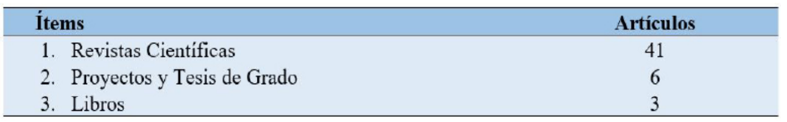
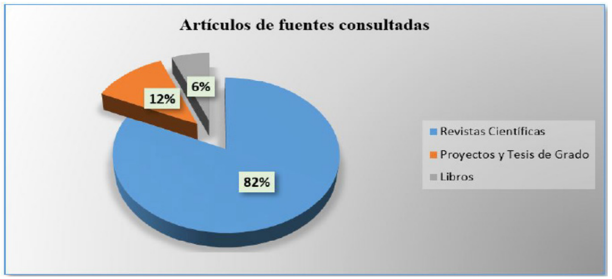
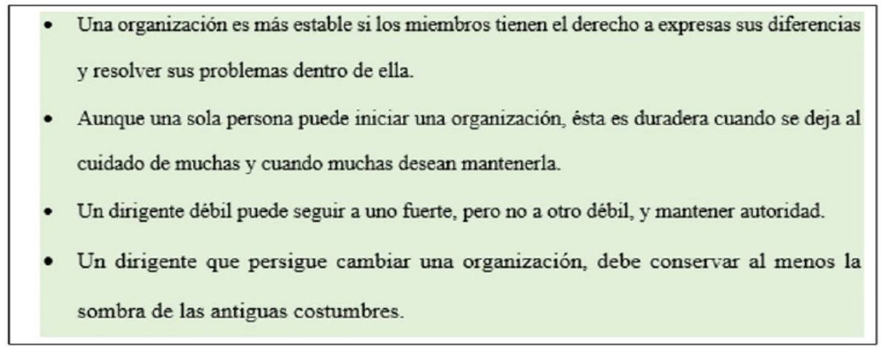

Introducción
La empresa ha dado múltiples transformaciones
en el mundo comercial, desde las pequeñas
bodegas en los poblados hasta las grandes
corporaciones nacidas en los rincones más
alejados del país evolucionadas en las grandes
ciudades industrializadas, así pues el comercio
internacional, las empresas industrializadas, la
evolución de los mercados y las inversiones, han
sido factores claves de la economía globalizada
que vertiginosamente ha crecido luego de la
II Guerra Mundial, de allí la importancia de
la empresa al incursionarse en los mercados
desde el punto de vista local, regional, nacional
e internacional. (Sarmiento del Valle, 2014); Ya
que en el caso de la internacionalización debe
considerarse el fortalecimiento del entorno
de las organizaciones para que acedan a
los procesos globalizados gradualmente.
(Restrepo & Vanegas, 2015).
Pero muy a pesar de las circunstancias, por los
cambios que ha tenido que pasar la empresa,
el escenario global ha favorecido su expansión
y las exigencias de la sociedad civil se han
visto en la necesidad de contar con ellas, en
mayores proporciones de responsabilidad
social, lo que ha hecho que las multinacionales
se enfoquen hacia otras perspectivas sobre la
opinión de la sociedad en la toma de decisiones
(Sánchez V. , 2015); pero esta alternativa, se ve
condicionada en cuanto a factores de gestión y
funcionamiento, de índole económico, político,
jurídico, sociocultural, ambiental y todo lo que
predomina su entorno. (Hernández, 2016)
(Zapata Rotundo, Mirabal, & Canet Giner,
2015)
La gerencia empresarial está encaminada a
surgir por la vía que ha tomado las demás
organizaciones en el modelo de cómo perciben
los negocios, el mercado, la economía, todo
que gire alrededor de ella; asimismo el
emprendimiento es tan antiguo como el ser
humano, pero la voluntad lo ha conllevado a solucionar necesidades, de allí que emprender
es una acción de tipo socio-económica (Surdez,
Sandoval, Magaña, & López, 2020).
De allí que la empresa privada aporta al
mercado el desarrollo necesario para la
sobrevivencia de las comunidades, con
sus mercancías y/o productos que se
intercambian logrando un equilibrio armónico,
conduciéndose a una economía estable, que
según (Gutiérrez, Vega, Concha, & Osorio,
2019), están correlacionadas con las políticas
públicas; pero que en ocasiones pueden
surgir fallas y contratiempos en los aspectos
endógenos y exógenos; en lo intra-empresarial
puede faltar la coordinación óptima del
gerente con respecto a la dirección estratégica
de la organización y la responsabilidad social,
en la que no solamente consiste en aumentar
las utilidades de la sociedad, sino que depende
de múltiples factores (Naranjo, Mercado,
Naranjo, & Giraldo, 2018); y, en cuanto a la
visión extra-empresarial existe la tendencia
ante los cambios globalizados de rápida
aceleración que puedan afectar la innovación
(Pionet, Martínez, & Sosa, 2015), el avance
tecnológico, el intercambio comercial nacional
e internacional, el cambio climático, daños
ecológicos, destrucción de la capa de ozono
(Sarmiento del Valle, 2014) y el desarrollo
sostenible.
Por ende, es importante formular las
siguientes interrogantes para dar a conocer los
elementos esenciales que trata la investigación
respecto a la gerencia de empresas: ¿Cuáles
son las perspectivas del empresario para la
buena marcha de sus negocios, la visión y
misión estratégicas que optará el empresario
así como, la responsabilidad social de
la misma y el desarrollo sostenible?; al
respecto se consultaron fuentes secundarias,
tesis publicadas y revistas científicas que
sustentaron la investigación.
Método
Para el desarrollo de la investigación fue desarrolla a través de una matriz de datos, provenientes
de fuentes secundarias, de revistas científicas, tesis y/o trabajos de proyectos de grado, libros;
de los que se extrajeron los puntos más relevantes para ser analizados en el presente estudio
y en los cuales se sustenta la investigación, tal como se diseña en la presente tabla y gráfico de
referencia, cuyas fuentes consultadas se exponen al final en la bibliografía.
Tabla 1. Análisis de datos de la matriz de fuentes bibliográficas

Fuente: Matriz de datos.

Figura 1. Análisis de los datos de la matriz de fuentes consultadas
Fuente: Matriz de datos
Desarrollo
La gerencia de empresas, perspectivas.
La evolución de la gerencia de empresas a
nivel internacional surgió desde el momento
en que debían tomarse las decisiones para el
intercambio de bienes y servicios a través de los
organismos financieros para el convenio con la
divisa que se quiera pactar, y así como también
darse cuenta a nivel organizacional los cambios
que se suceden en los mercados. De allí que
el potencial creador de una organización, así
como su ventaja en la competencia empresarial,
dependen de la capacidad de mantenerse activa ante los factores que la rodean: las
herramientas tecnológicas, el recurso humano,
la capacidad competitiva, la banca y finanzas,
el comercio internacional, son habilidades de la
gerencia que marcan el acondicionamiento de
las condiciones para asumir las competencias
para el éxito de la organización. (Gutiérrez &
Concha, 2014).
Asimismo, la gerencia ha evolucionado,
desde tiempos remotos, así como el hombre
ha evolucionado y se ha reestructurado en
su forma de vida a través de los siglos, es
posible pensar que la gestión gerencial haya
ido transformándose desde que se inició el comercio en las relaciones comerciales en Asia, la cual dio
grandes hazañas para hacerse visible
y dejar en el tiempo grandes frutos que hicieron formarse en grandes gerentes para lograr
tales hazañas: la construcción del Taj Mahal en la India, las pirámides de Egipto, El Coliseo de
Roma, entre otras maravillas de la antigüedad, y muchas otras compañías que comercializaban
productos a través de los puertos nacionales e internacionales que marcaron un hito en la
historia Colombiana; todo ello ha demostrado que el gerente posee una visión muy amplia,
visión futurista. (Barrera, Eliana, & Riveros, 2017)
Igualmente, a raíz de la revolución industrial con el crecimiento de las empresas por muy
pequeñas que éstas se hayan iniciado, siempre ha habido la necesidad de forjarse con una buena
gerencia, más eficiente, más precisa, con métodos infalibles para aumentar la productividad
comercial y aminorar los costos. Pero no es sino hasta fines del s.XIX, cuando los gerentes
inician la búsqueda de recursos para ampliar los estudios de la gerencia empresarial haciendo
las organizaciones más eficientes y productivas.
Por otra parte, Machiavelli en 1531 citado por: (Lara, Rodríguez, & Del Canto, 2016), sentó las
bases de las organizaciones de hoy día, tales según la tabla.
Tabla 2. Principios adaptables a las organizaciones

Fuente: (Lara, Rodríguez, & Del Canto, 2016)
Al igual que las formas de Sun Tzu, citado por: (Lara, Rodríguez, & Del Canto, 2016), hace 2000
años, que presentó su obra “El arte de la guerra” relató según la siguiente tabla de formas
estratégicas:
Tabla 2. Formas estratégicas de organización de Sun Tzu.
Fuente: (Lara, Rodríguez, & Del Canto, 2016)
De tal forma que fueron reglas impartidas
donde se guiaron asuntos de estrategias
militares, que han sido adaptadas a la
planificación estratégica de las empresas y así
se enfrenten las más altas competencias en los
mercados.
Por otra parte, entre el siglo XIX y XX se dan
transiciones de capitalismo: empresarial a
capitalismo gerencial, quienes protagonizaron
la gerencia como una ciencia digna de ser
analizada, evaluada; es decir, estudiada
por todo gerente, porque los primeros
capitalistas, eran los dueños de sus propios
negocios, eran comerciantes que aportaban
capital a su empresa, utilizando siempre sus
propios recursos económicos y financieros,
que erigieron grandes emporios comerciales,
lideradas por su parte; pero a medida que
las empresas crecías, se hacía más evidente
la necesidad de invertir, porque se necesitó
inyectar capital extranjero para hacer surgir
las empresas, los propietarios y socios
empresariales enfrentaron grandes retos
y desafíos frente a los factores internos y
externos que circunscribió la empresa para
poder seguir siendo afianzada en sus valores
y principios. (Melo & Fonseca, 2014)
La Empresa. El concepto de empresa tiene
un fin de lucro, al igual que una cooperativa,
como modalidad de empresa, tienen una
personalidad jurídica porque tienen un
fin económico que engloba una serie de
elementos: la economía; ese conjunto de
elementos afecta la actividad económica,
independientemente de los miembros que
la conforman. Así el concepto de empresa
es una unidad económica, y viene dado por
la actividad que ella ejerza, sus elementos
son materia prima, maquinaria, trabajadores;
ella no solamente es un registro mercantil,
sino que obedece a normas legales con el
Estado. Asimismo, la sociedad mercantil con
fines de lucro, es el objetivo fundamental de
las sociedades de comercio, se constituye independientemente y siempre y cuando
realice actos de comercio, está regulada por el
Código de Comercio.
Por esta parte, las perspectivas de la gerencia
de empresas, con respecto a las actividades
que ejecuta, en una organización de actualidad,
ésta siempre ha atendido el capital humano
como primer punto importante y segundo
apegado al coaching para el mejoramiento
permanente con la sana formación para el
logro de sus resultados y valores, basados en
el talento del personal, el profesionalismo, y
la contribución que haga a la organización
(Barrientos, Hurtado, Lesnes, & Duarte, 2020);
(Bonilla-Sanabria, 2017).
La Gerencia. Gerenciar la empresa significa un
gran compromiso y responsabilidad día a día y
las 24 horas al día, se asumen deberes que hay
que cumplirlos, tanto a nivel de negocios como
corporativos, debido a que se coordinan una
gran cantidad de estrategias a ser aplicadas
y se intenta justificar los errores, pero la idea
es innovar, cambiar el estilo de mercaderías,
la experiencia que ha adquirido la gerencia
en una empresa a través de los años, es una
buena fuente de energía, porque de allí se
sobreentiende que ha sobrevivido a múltiples
factores que puedan haberla afectado, tanto
en el plano interno como externo. (Muñoz
Fernández & Ugueto Maldonado, 2015)
El gerente por lo general no actúa sólo, siempre
es guiado por una u otras personas que
tienen que ver directamente con los negocios,
pudiéndosele llamar equipo de la gerencia,
está conformado por socios, administradores,
contadores, auditores, entre otros gerentes del
mundo de la banca y finanzas. (García Payares,
Boom Cárcamo, & Molina Romero, 2017).
Asimismo, en el área académica, la gerencia se
define como “Estudiar la toma de decisiones y
las acciones más asertivas por parte del equipo
de la alta gerencia, para poder lograr competir
en el mercado”; en este mismo orden de ideas, (Drucker, 2014), dice que la gerencia es una
práctica más que una ciencia o una profesión,
con elementos de ambas cosas; por una parte,
lo atinente a lo científico y por la otra debe ser
con profesionalismo para jugar con la práctica
de ambas. (Rivas Montoya, 2015), (Torres
Hernández, Lastenia Sandrea, & Prieto, 2016)
El rol de la Gerencia. La perspectiva del “papel
de la gerencia”, es un elemento dinámico
de toda empresa, un grupo diferente y con
prominencia; así surge la gerencia y los intereses
que el mundo tiene en ella depositados; el
gerente es la persona que dirige la empresa
es dinámico, le da vida al negocio; dirige los
recursos de la producción, es un sistema
altamente competitivo cuando marcha sobre
ruedas, con calidad y éxito en el desempeño
de sus funciones gerenciales, y mantienen la
empresa en supervivencia porque es el único
que puede salvarla. La gerencia posee don de
líder y capital de trabajo, correlacionados entre
sí; y se oye hablar de la responsabilidad de la
gerencia, pero no del capital. (Naranjo Arango,
2015). Con la aparición de la gerencia en el
mundo empresarial, fue un hecho histórico
en la sociedad, a principios del siglo pasado;
por lo que seguirá siendo una institución
básica dominante, sobreviviente de un sistema
industrializado moderno confiado en los
recursos que posee la empresa: humanos,
materiales, financieros. (Drucker, 2014).
La Gestión Estratégica Empresarial (GEE).
El gerente empresarial de hoy, ha observado
que las empresas están frente a desafíos
previsibles o no, más que prepararse para un
mañana, la competencia ha cambiado a ritmos
crecientes en todo el mundo; y las estrategias
iniciales se han convertido en indispensables
para el desarrollo de beneficios competitivos.
Igualmente están presentes las claves
estratégicas emergentes que están destinadas
a desarrollar patrones sobre acontecimientos
venideros. (Ordóñez, Franco, & Freire, 2018)
Por tal razón, la gerencia tiene como
función desarrollar actividades en las que
participan las gerentes, en el comercio, en
las organizaciones, en el cual se encuentran
involucrados, los directivos de la organización,
quienes con su experiencia y pericia hacen
todo lo posible por el buen funcionamiento
de la empresa; los clientes directamente, los
proveedores quienes son los encargados de
suministrar las herramientas necesarias, para el
trabajo empresarial con productos y servicios;
los empleados, quienes son la mano derecha
de la organización que siempre son guiados
por el gerente en la toma de decisiones para
la producción y buena marcha de los negocios;
también se encuentran factores externos que
no pertenecen a la organización pero que de
una u otra forma son indispensables para el
funcionamiento: el Estado, por su parte aporta
las normativas legales que rijan la marcha
del negocio, registro de la firma, los tributos,
y demás contribuciones. (Yanyn, Daniela, &
Vélez Patiño, 2018)
Por tanto es importante la gestión estratégica
en la empresa (GEE), porque al definir la GEE,
o como su nombre lo indica, estrategias que
tiene que llevarse a la práctica en el mundo
de los negocios, es un plan de acción que
se desarrolla para tener competencias de
legalidad y donde se obtengan ventajas de
modo que logre vincularse con otras empresas
más grandes o pequeñas, para poder expandir
su mercado, donde se dé a conocer la marca,
los productos y servicios que ofrece; de allí
que el aspecto fundamental en cualquier
organización es lo que le permite conocer su
entorno; por lo que implica la implementación
de herramientas para dar cumplimiento a los
objetivos y metas plantadas por la dirección,
con los recursos que posee y esto le permitirá
evaluar los factores internos y externos en que
se encuentra ubicada la empresa. (Marcuzzi
Dávila, 2014)
Entonces, la GEE, es el vínculo directo con
los resultados que espera la empresa que
sean logrados en el mundo de los negocios,
articulado con todas las potencialidades que
posee, la competencia, la producción, los
socios, los empleados; es decir, tanto en la
parte interna como externa que contribuyen a
alcanzar las metas definidas desde sus inicios.
(Bernal Torres, Frost González, & sierra Arango,
2014)
Asimismo en la GEE entran las relaciones
entre los comerciantes, en las importaciones
y exportaciones de productos y servicios,
con el compromiso ante el aseguramiento
del entorno financiero que puede ser
condicionante y que a su vez coadyuva
directamente a las organizaciones para la
competitividad de sus productos; es así como
funciona ese despliegue técnico de recursos
que posee la empresa y que pudiera adquirir
a través de otros convenios comerciales para
dar cumplimiento con sus clientes, con la
finalidad de aumentar las ventas, que con
ello se incrementan las utilidades, hacer que
la empresa crezca y sea más competitiva y
mejoren las relaciones comerciales; es decir
que crezca a la par cómo va la tecnología,
en innovación y transferencia tecnológica.
(Odreman, 2014). Entonces, la Estrategia de la
empresa, es guiada por el gerente y su equipo
organizativo, como base fundamental para
lograr sus cometidos. (Montealegre González,
Delgado Cortés, & Cubillos Calderón, 2017)
Pero al diseñar una estrategia que de buenos
resultados, se pueden poner en práctica
nuevas estrategias que las empresas vean que
dan excelentes formas de comercialización del
producto, mejores que las que haya venido
empleado, porque hay que tomar en cuenta
que los entornos cambian, y también tienen
que cambiarse las estrategias. Por otra parte
si no se utilizan estrategias, no se puede estar
seguro de que la empresa cambie de rumbo,
siempre será una empresa con limitaciones,
tendente a estancamientos, sólo para compra
y venta de productos o estrategias del
menudeo; de allí que la GEE es la que define
el futuro de la empresa, el rumbo o camino
a seguir de la organización para lograr dar
sentido a la innovación. (González Molano
& Martinez Campo, 2014); (Fierro Moreno &
Martínez Ávila, 2015).
Responsabilidad Social Empresarial (RSE).
La RSE, es el compromiso que tiene la empresa
de ser altamente responsable con la sociedad
civil, con sus empleados, abarca el cumplimiento
de los gerentes de hacer que esta fluya con
las exigencias económicas, políticas, sociales,
ambientales y estudios de sostenibilidad que
hagan que ella sea altamente productiva, y esto
abarca a todos sus integrantes, especialmente
a los socios de la misma, ya que todos sus
elementos contribuyen a que la empresa se
consolide bajo un ambiente armónico y no
en un entorno que sea aislado, porque la
empresa debe convivir con la sociedad. (Pérez,
Espinoza, & Peralta, 2016).
Este término de RSE surgió en Estados Unidos
de América, el cual se enfocó en la visión
paternalista de la empresa dentro de un sistema
capitalista, surgiendo sobre el socialismo, donde
se fortaleció el rol de la empresa en cuanto
a su crecimiento económico y financieros en
la sociedad (García & Madero, 2016); y, en la
actualidad, se habla del fenómeno de la RSE
con suma frecuencia, donde convergen tres
fenómenos: globalización, derechos humanos
y las tecnologías de la información, que en
combinación deben operar en un desarrollo
armónico. (Bonilla-Sanabria, 2017), (Milian
Dueñas, 2015);
Por tanto, la RSE dentro de la organización
está referida a la cultura organizacional y a
los socios en su actividad empresarial, lo
que indica que éstos tienen que desarrollar
estrategias para satisfacer las necesidades y
brindar amplias expectativas a la sociedad
quienes se benefician del consumo de sus productos. Las teorías de la RSE van desde
la toma de decisiones, el liderazgo, hasta
la gestión de la empresa y el escenario
que la envuelve. (Parody Mindiola, Jiménez
Cepeda, & Montero Pulgarín, 2016); De
allí que la responsabilidad, ha de adecuar
la organización con sus empleados, el
Estado en su parte jurídica y normativa, el
mercado y las relaciones comerciales y el
hábitat donde ella impere, ajustándose a
los cambios paulatinos o repentinos; pero
son los gerentes quienes consideren qué
aspectos e intereses estratégicos apliquen
dentro de la misma y que los consideren
socialmente responsables. (Sapién, Piñón, &
Gutiérrez, 2016).
Sobre el concepto de RSE, existen muchos
autores que hablan sobre el tema, que
son diferentes desde la administración y la
economía, y otras ciencias que lo aplican
como la RSE corporativa donde cada
empresa es responsable de sus actividades
en la respuesta al impacto social, económico
y ambiental del marco que le rodea y
que aporta beneficios equivalentes y de
sostenibilidad sin reflejar daño alguno a
las partes que intervienen con ella. (Díaz
Ortíz, 2016); pero con el fortalecimiento de
las empresas y la influencia de ellas en el
entorno, pasó a ser que el empresario debe
tener como meta las políticas que se plantea
y las que debe cumplir con el Estado, es
decir cubrir los valores que hace frente a la
sociedad. (Peña Cuervo, 2018).
Para Colombia, dentro de las perspectivas
innovadoras, al inicio de un nuevo siglo,
se encontraron propuestas para la gestión
de las empresas, que lideraron agendas de
gerentes de calidad en el tiempo preciso,
que necesitaban una lógica de gestión, en
los que los grupos de interés y entorno
socio-ambiental tienen competencia.
(Henao Pérez, Beltrán Duque, R., Restrepo,
& Alberto, 2020).
Igualmente la RSE desde el punto de vista de los
grupos de interés (Montañez Moya & Gutiérrez
Olvera, 2015), confirma que la empresa debe
establecer sus grupos, conocerlos a través
del diálogo, dando respuesta a sus peticiones
parta mejorar la práctica en común; estos
grupos pueden ser internos y externos: (García
Solarte, Conzález Campo, & Murillo Vargas,
2017)
- En los grupos internos se cuenta con los
propietarios y accionistas: poseen un grado alto
de participación en la empresa, se clasifican por
la cantidad de acciones que posean; pero para
una pyme o empresa privada, sólo concierte a
la gerencia.
- Igualmente en el factor interno, respecto a
los grupos de responsabilidades para con los
empleados, es uno de los más importantes,
ya que realizan las labores que le asignen
sus superiores, en algunas empresas poseen
un contrato laboral al igual para todos, y
dependiendo del nivel jerárquico, reciben la
retribución o sueldo o especie, en diferentes
escalas.
- Continuando con la RSE desde los
grupos de interés externos a la empresa, la
responsabilidad con los clientes es igualmente
mayor porque éstos son los que aportan
el consumo o usuarios de las mercancías o
productos que genera la empresa para el bien
común y los servicios que se requieran de la
misma.
- La RSE para el grupo de proveedores, son
los que generan a la empresa y sin pertenecer
a ella, los productos, bienes y servicios
que ésta necesita, todo lo que la empresa
requiera de la parte externa con respecto a la
comercialización, se canaliza por este grupo
de interés.
- La responsabilidad para la comunidad y el
entorno, es el medio físico propio, el ambiente
donde está ubicada la organización, esto incluye los cuatro elementos de la naturaleza,
la flora, la fauna, recursos hídricos, aire, los
recursos que son renovables y no renovables,
útiles a la naturaleza para la conservación del
planeta, del que la empresa debe cuidar en
todos sus ámbitos.
- La responsabilidad aplicable para con el
Estado; son grupos de interés que proveen los
mecanismos necesarios para que la empresa
funcione, apegada a las normativas legales,
cumpliendo con los requisitos mínimos
establecidos.
- La responsabilidad para con la sociedad y
público al cual presta su servicio; es la relación
interinstitucional o con personas naturales, con
la cual se relaciona la empresa: asociaciones,
fundaciones, y que no pertenecen a ella, pero
que pueden influir en la RSE directamente.
(Santafé, 2017)
El Desarrollo Sostenible: Sostenibilidad de
la Empresa.
Al finalizar la década de los 80, la sostenibilidad
fue oída por primera vez relacionada con la
empresa, cobrando fuerza a través de todos
estos años en el mundo de los empresarios;
por su parte, John Elkington, considerado
como el “padre del desarrollo sostenible (1987)
perfeccionó la posibilidad de transformación
entre hacer negocios manteniendo la
responsabilidad con el medio ambiente,
incluyendo los factores sociales y económicos.
(Sánchez A. B., 2016).
El desarrollo sostenible, es un concepto que se
ha venido definiendo desde los años sesenta,
(s. XX), cuando el club de Roma convoca a los
académicos, científicos y sociólogos, entre
otros para debatir los cambios significativos
del medio ambiente en el mundo (García
Navarro, Rubio Aguilar, Huarcaya, Minnicelli, &
Acuña, 2017); ya para los 70, la preocupación
de los políticos es mayor debido al deterioro de la naturaleza; en la cual se celebró en la
ONU la primera Conferencia de Estocolmo,
con resultados a través del tiempo de otras
agremiaciones y programas como el PNUMA,
quienes han velado arduamente por el tema
ambiental. (Henríquez Larrarte & Ignacio,
2015)
Por otra parte, las sociedades empresariales
han hecho caso omiso sobre la relación
que deben tener con el medio ambiente, ya
que el patrón consumista y materialista del
empresario, busca incrementar sus ingresos, no
necesariamente satisfaciendo las necesidades
primarias sino obtener además necesidades
suntuosas a través de los recursos naturales de
la madre Tierra. (Alaña Castillo, Capa Benitez,
& Sotomayor Pereira, 2017); (León Bolaños,
2015).
Igualmente, en ese mismo año la Comisión
Mundial sobre Medio Ambiente y Desarrollo
establece lo definición del desarrollo
sostenible como “el desarrollo que satisface
las necesidades de las generaciones presentes
sin comprometer la habilidad de las futuras
generaciones para la satisfacción de las
propias necesidades” (López Pardo, 2015);
de allí que esta correlación de la empresa y
entorno ambiental, es sinónimo de ecosistema
y crecimiento de la economía, por ello es
necesario que se realicen actividades de
sostenibilidad para que se puedan sostener a
largo plazo. (Hollmann, 2017)
En este orden de ideas la responsabilidad social
empresarial y la sostenibilidad empresarial
es un camino de aprendizaje, que han
interpretado los gerentes en sus proyecciones,
con expresiones difusas e insuficientes para
dar claridad a los programas cortoplacistas que
inmiscuyan las partes con intereses afines y den
una estructura definitiva al tema en cuestión,
agregando la actividad comercial, (Jaramillo
Arango, 2015); la responsabilidad empresarial,
análisis del ciclo vital de la empresa, dentro del diseño de estrategias de la organización
empresarial. (Uribe Macías, Vargas Moreno, &
Merchán Paredes, 2018)
Discusión
La Gerencia es la actividad que desarrollan
los socios y administradores en los cuales
cuidan bien de los asuntos internos y externos
que puedan afectarla, teniendo un punto
de equilibrio para desarrollar estrategias
que puedan dar óptimos resultados para el
crecimiento empresarial de la misma, en la
que velan por los factores más importantes:
los socios, trabajadores, clientes, proveedores,
y comunidad en general donde se desarrolla la
actividad comercial.
En la RSE existen los grupos de interés que son
los que brindan oportunidades y mantienen a
la empresa viva, que son los comerciantes en
común, con los cuales se sostienen relaciones
y se interactúa, y esta interacción va como
un círculo, entre socios, entre empleados,
con los clientes y proveedores y hasta con el
mismo Estado cuando se tienen que cancelar
sus obligaciones; ya que la RSE abarca todos
estos grupos y ello hace que la empresa se
consolide en lo económico, político, social,
cultural, ambiental.
Aunque muchos gerentes ignoren la empresa
y su relación con el medio ambiente, hay
que acotar que, para que la empresa tenga
funcionalidad en el tiempo, es necesario que
esté correlacionada con el entorno ambiental,
la sostenibilidad es sinónimo de crecimiento;
ya que la sostenibilidad tiene ya más de medio
siglo desde su creación.
Los gerentes para proyectar se basan en
la gestión estratégica de la empresa, si su
empresa ha dado buenos resultados al final de
un período, y si se pueden hacer inversiones
sobre esas proyecciones.
Conclusiones
Los gerentes empresariales tienen muchas
responsabilidades, el principal es el factor
humano, hacer que este se sienta comprometido
con la empresa, que cumpla con las labores que
se le asignen por parte de los directivos. En la
categoría de los empleados, por lo general se
establecen jerarquías que van desde los más
destacados con altos estudios profesionales,
hasta los menos estudiados; los primeros han
de desempeñar cargos de alta gerencia, tomar
decisiones empresariales en la empresa a la
hora de la producción e industrialización de
productos, son labores que no puede hacerlo
sino una persona altamente capacitada,
que será evaluada por un departamento de
recursos humanos, el cual el gerente podrá
cumplir con los objetivos trazados, que es el
que va a llevar a la empresa a cumplir con sus
fines productivos, en productos y servicios.
También es factible mencionar la responsabilidad
social con respecto a los grupos de interés,
pues la empresa se ve vinculada a estos
grupos, ya que presenta responsabilidad social
directa con los socios, quienes son los que
velarán por ella en la permanencia del tiempo
de la vida de la empresa; los empleados, son
grupos de interés quienes están sometidos
voluntariamente y capacitación a cumplir con
las prerrogativas ordenadas por el gerentes;
los proveedores, son factores externos, que
vinculan a la empresa con respecto a lo que
ella necesita, productos, servicios, para poner
en ejercicio la producción; los clientes, son
los grupos más importantes, porque de ellos
también depende que la empresa surja,
necesariamente necesita vender y competir,
aumentar sus ingresos. Existen otros grupos
de interés que son importantes para la buena
marcha de los negocios, tales como las
organizaciones gubernamentales: DIAN, para
regular los impuestos y otras contribuciones
que esta tenga que ver con los ingresos; el
registro de comercio, entre otros.
La responsabilidad social empresarial, por
su parte es una tarea de todas las empresas,
las cuales se han venido desarrollando a
través de los tiempos, estrategias de estudios
relacionados con el ambiente, son factores
que deben ponerse en práctica para que las
empresas sean realmente competitivas han
de contar con estudios de sostenibilidad y
protección del medio ambiente; pues se han
encontrado empresas que han degradado el
medio ambiente, ejemplo las de curtiembre o
tenería, plantas procesadoras de pieles, que
distribuían sus químicos directamente a los
ríos, ocasionando graves daños a la ecología.
Referencias
- Alaña Castillo, T. P., Capa Benitez, L. B., &
Sotomayor Pereira, J. g. (2017). Desarrollo
sostenible y evoilución de la legislación
amibental en las Mipymes del Ecuador. Scielo,
9(1), 91-99. Obtenido de http://scielo.sld.cu/pdf/rus/v9n1/rus13117.pdf
- Barrera, Eliana, & Riveros, J. (2017). Elaboración
de la planeación estratégica y cuadro de mando
integral para la empresa El Sauzalito Ltda.
Repository uptc, 106. Obtenido de https://repositorio.uptc.edu.co/bitstream/001/2007/1/TGT-647.pdf
- Barrientos, M. E., Hurtado, H. L., Lesnes, S. A., &
Duarte, R. D. (2020). ¿Coaching en las empresas?
La gerencia del coaching en las organizaciones
contemporáneas. Mundo Fesc., 10(1), 223-
236. Obtenido de http://www.”Coachimg_en_las_empresas?_La_gerencia_del_coaching_en_las_organizaciones:contemporáneas.MundoFesc .
- Bernal Torres, C. A., Frost González, J. S., & sierra
Arango, H. D. (2014). Importancia de la gerencia
del conocimiento: contrastes entre la teoría
y la evidencia empírica. Redalyc - Estudios
Gerenciales, 30(130), 65-72. Obtenido de
https://www.redalyc.org/pdf/212/21230585010.pdf
- Bonilla-Sanabria, F. (enero/junio de 2017).
Comentarios sobre la RSE, el Derecho
Societario y la empresa de grupo. RedalycUniversitas Javeriana(134), 21-58. Obtenido de
https://www.redalyc.org/pdf/825/82550740002.pdf
- Díaz Ortíz, N. P. (2016). Responsabilidad Social
Empresarial como expresión de avance del
conocimeinto del hombre desde la cultura
organizacional. Redalyc, IX(16), 121-131.
Obtenido de https://revistas.unbosque.edu.co/index.php/cuaderlam/article/view/1252
- Drucker, P. F. (2014). La gerencia de empresas.
Obtenido de https://books.google.co.ve/aAgAAQBAJ&pg=PT8&hl=es&source=gbs_toc_r&cad=3#v=onepage&q&f=false
- Fierro Moreno, E., & Martínez Ávila, M.
(2015). La innovación estratégica como
predictora de la innovación organizativa en
las instituciones de educación superor en
México. Scielo, 15(69). Obtenido de http://www.scielo.org.mx/scielo.php?script=sci_arttext&pid=S1665-26732015000300009
- García Navarro, S., Rubio Aguilar, V., Huarcaya,
S., Minnicelli, A., & Acuña, J. (2017). Razones
y propósitos para incorporar la RS en la
formación de personas y en organizaciones
de Latinoamérica. Scielo, 11(2). Obtenido de
https://scielo.conicyt.cl/scielo.php?script=sci_arttext&pid=S0718-73782017000200005
- García Payares, F. J., Boom Cárcamo, E. A., & Molina
Romero, S. J. (2017). Habilidades del gerente
en organizaciones del sectyor palmicultor en el
Departamento del Cesar - Colombia. Redalyc,
21(2), 1-21. Obtenido de https://www.redalyc.org/pdf/3579/357955446001.pdf
- García Solarte, M., Conzález Campo, C. H., & Murillo Vargas, G. (2017). Características
de las pymes según la gerencia sea hombre o
mujer: caspo empírico de Cali. Redalyc(82),
1-20. Obtenido de https://www.redalyc.org/pdf/206/20652069007.pdf
- García, J., & Madero, S. (2016). La evolución
del concepto de responsabilidad social
corporativa: Revisión literaria. Redalyc(51),
38-46. Obtenido de https://www.redalyc.org/pdf/944/94446004006.pdf
- González Molano, C., & Martinez Campo, J. L.
(2014). Gerencia Estratégica e Innovación
Empresarial: referentes conceptuales. Scielo,
12(1), 107-116. Obtenido de http://www.scielo.org.co/pdf/diem/v12n2/v12n2a09.pdf
- Gutiérrez, J. A., & Concha, J. R. (2014). Modelo
gerencial de la empresa exportadora
colombiana: análisis de decisiones, estrategia y
geoconocimiento. Dialnet - Lebret- Univ. Santo
tomás(6), 323-347. Obtenido de http://revistas.ustabuca.edu.co/index.php/LEBRET/article/view/1460 .
- Gutiérrez, J., Vega, J., Concha, J., & Osorio, S.
(2019). Estructura gerencial internacional de
las empresas en Colombia en el marco del
modelo exportador y de liberación económica.
Redalyc - Universidad del Rosario, 21(37).
Obtenido de https://www.redalyc.org/jatsRepo/1872/187260206004/html/index.html#redalyc_187260206004_ref9
- Henao Pérez, J. C., Beltrán Duque, A., R., Restrepo,
& Alberto, C. (2020). Avances. Entorno de
los negocios. Estado de la RSE en Colombia.
Administración Uexternado, 45. Obtenido
de http://administracion.uexternado.edu.co/PRME/memorias/Entorno%20de%20los%20Negocios%20N%2020.pdf
- Henríquez Larrarte, R., & Ignacio, O. B. (2015).
Implicancias de una responsabilidad social
empresarial sustentable. Redalyc, 16-
27. Obtenido de https://www.redalyc.org/pdf/4778/477847103002.pdf
- Hernández, L. (abril-junio de 2016). Entorno y
empresa. Redalyc, XXII(1), 6-7. Obtenido de
https://www.redalyc.org/pdf/280/28049145001.pdf
- Hollmann, M. A. (2017). Construcción
histórica del actual concepto de desarrollo
sostenible . Antecedentes de problemáticas
socioeconómicas y amtianelsssss. Revistas
UNLP(10). Obtenido de https://revistas.unlp.edu.ar/CADM/article/view/2841/5046
- Jaramillo Arango, I. J. (2015). Reflexiones acerca
de la RSE desde su dimensión laboral. Redalyc.
(30), 9-21. Obtenido de https://www.redalyc.org/pdf/4678/467846263002.pdf
- Lara, D., Rodríguez, P., & Del Canto, E. (2016).
La gerencia en el contexto actual venezolano.
Redalyc, 3(6). Obtenido de https://www.redalyc.org/jatsRepo/5530/553056828004/html/index.html
- León Bolaños, N. V. (2015). Propuesta de
instrumentos de política pública que promuevan
la protección y cuidado ambiental en la
gestión empresarial del Ecuador. Repoistorio,
Pontificia Universidad Católica del Ecuador.
Obtenido de http://repositorio.puce.edu.ec/handle/22000/10481
- López Pardo, I. (2015). Sobre el desarrollo sostenible
y la sostenibilidad: conceptualización y crítica.
Redalyc(20), 111-128. Obtenido de https://www.redalyc.org/pdf/3221/322142550007.pdf
- Marcuzzi Dávila, M. O. (2014). Visión complejizante
del a gerencia de responsabilidad social en las
empresas rnetales uiversitarias venezolanas.
Redalyc(1), 81-102. Obtenido de https://www.redalyc.org/pdf/4655/465545896008.pdf
- Melo, L. I., & Fonseca, D. E. (2014). Descripción y análisis de la gerencia en mpymes
agroindustriales del departamento de
Boyacá, Colombia. Redalyc, 297-310.
Obtenido de https://www.redalyc.org/pdf/1699/169932435001.pdf
- Milian Dueñas, L. (2015). Responsabilidad social
corporativa: origen y evolución del concepto
de RSC en el entorno empresarial europeo y
español. Repositorio - Universidad Pontificia
Comillas. Obtenido de https://repositorio.comillas.edu/xmlui/handle/11531/4516
- Montañez Moya, G. S., & Gutiérrez Olvera,
S. (2015). La Responsabildiad Social
Empresarial desde el enfoque de los grupos
de interés. Dialnet, 94.
- Montealegre González, J. V., Delgado Cortés, A.,
& Cubillos Calderón, C. H. (2017). Relaciones
entre modelos gerenciales y pensamiento
estratégico empresarial en empresas
agroindustriales del departamento del Tolima.
Redlayc(42), 26-47. Obtenido de https://www.redalyc.org/pdf/646/64652584003.pdf
- Muñoz Fernández, M. A., & Ugueto Maldonado,
M. G. (2015). Contextualización de las
funcioes gerenciales teóricas a la realidad
de las Pymes en San Cristóbal, Venezuela.
Redalyc(1), 119-138. Obtenido de https://www.redalyc.org/pdf/4655/465545898006.pdf
- Naranjo Arango, R. (2015). Habilidades
gerenciales en los líderes de las medianas
empresas de Colombia. Redalyc, 119-146.
Obtenido de https://www.redalyc.org/pdf/646/64639792008.pdf
- Naranjo, R., Mercado, N., Naranjo, O., &
Giraldo, M. (2018). Responsabilidad
social empresarial (RSE) en medianas
empresas del Departamento del
Atlántico, Colombia. Redalyc, 23(84),
18. Obtenido de https://www.redalyc.org/jatsRepo/290/29058776008/29058776008.pdf
- Odreman, J. G. (Octubre de 2014). Gestión
Tecnológica: Estrategias de Innovación
y Transferencia de Tecnología en la
industria. Scielo, 18(73). Obtenido de
http://ve.scielo.org/scielo.php?script=sci_arttext&pid=S1316-48212014000400004
- Ordóñez, S., Franco, M., & Freire, S. (2018). La
dirección estratégica como mecanismo de
mejoramiento de la gestión admiistrativa.
Uexternado, 10-16. Obtenido de https://revistas.uexternado.edu.co/index.php/sotavento/article/view/5488
- Parody Mindiola, K. D., Jiménez Cepeda, L. M., &
Montero Pulgarín, J. F. (2016). Análisis de los
factores internos de competitividad: caso de las
empresas lácteas del Cesar, Colombia. Redalyc,
194-210. Obtenido de https://www.redalyc.org/pdf/1513/151352655012.pdf
- Peláez León, J. D., & García Solarte, M. (2014).
Responsabilidad social empresarial y gestión
humana: una relación estratégica aplicada
desde un modelo explicativol. Redalyc, 10(2),
90-111. Obtenido de https://www.redalyc.org/pdf/2654/265433711007.pdf
- Peña Cuervo, D. M. (2018). RSE en Colombia, una
visión actual frente a Latinoamérica y España.
bdigital.Unal, 89. Obtenido de http://bdigital.unal.edu.co/69875/1/15445398.2018.pdf
- Pérez, M., Espinoza, C., & Peralta, B. (mayoagosto de 2016). La Responsabildad Social
Empresarial y su enfoque ambiental: una visión
sostenible a futuro. Scielo, 8(3). Obtenido
de http://scielo.sld.cu/scielo.php?script=sci_arttext&pid=S2218-36202016000300023
- Pionet, Y., Martínez, O., & Sosa, A. (2015).
Hacia una gestión innovadora del profesioal
de recursos humanos. Redalyc, 11(31), 74-90. Obtenido de https://www.redalyc.org/pdf/782/78241171005.pdf
- Restrepo, J. A., & Vanegas, J. G. (2015).
Internacionalización de las pymes: análisis
de recursos y capacidades internas mediante
lógica difusa. Scielo, 60(4). Obtenido de http://www.scielo.org.mx/scielo.php?script=sci_arttext&pid=S0186-10422015000400836
- Rivas Montoya, L. M. (2015). El equipo de la
alta gerencia en una empresa multinegocios.
Caso Suramericana, S.A. Redalyc - Ciencias
Estratégicas, 23(33), 121-133. Obtenido de https://www.redalyc.org/pdf/1513/151345259010.pdf
- Sánchez, A. B. (2016). El desarrollo sostenible
en empresas colombianas: un estudio con
base en la promoción y protección de los
derechos humanos. Journal.universidadean:
Comunicación, Cultura y Política, 7-44.
Obtenido de https://journal.universidadean.edu.co/index.php/revistai/article/view/1339/1300
- Sánchez, V. (2015). La redefinición del papel
de la empresa en la sociedd. Redalyc(20),
129. Obtenido de https://www.redalyc.org/pdf/3221/322142550008.pdf
- Santafé, C. O. (2017). Sistema de Información
Financiera Eficiente: propuesta para la
Universidad de Manizales. Manizales,
Colombia: Universidad Nacional de Colombia.
Obtenido de http://bdigital.unal.edu.co/58169/1/1053788112.2017.pdf
- Sapién, A. L., Piñón, L., & Gutiérrez, M. (enerojunio de 2016). Responsabilidad Social
empresarial en la empresa chihuahuenses
que obtubieron el distintito ESR-2013.
Scielo, 16(30), 223-232. Obtenido de http://www.scielo.org.co/scielo.php?pid=S1657-89532016000100016&script=sci_abstract&tlng=es
- Sarmiento del Valle, S. (2014). Estrategias de
internacionalización y globales para países en
desarrollo y emergentes. Scielo. Dimensión
Empresarial, 12(1), 111-138. Obtenido de http://www.scielo.org.co/pdf/diem/v12n1/v12n1a10.pdf
- Surdez, E., Sandoval, M., Magaña, D., & López,
M. (2020). Emprendimiento: modelos, tipología
y comunicación eficaz del proyecto (Primera
ed.). México, Jalisco: P-6, S.A.com. Obtenido
de https://books.google.co.ve/c&source=bl&ots=Odta9v8lZy&
- Torres Hernández, Y. d., Lastenia Sandrea, L.,
& Prieto, D. (2016). Desempeño gerencial
y calidad educativa en las escuelas básicas.
Redalyc - Negotium, 12(34), 58-80. Obtenido de
https://www.redalyc.org/pdf/782/78246591003.pdf
- Uribe Macías, M. E., Vargas Moreno, O. A., &
Merchán Paredes, L. (enero/junio de 2018).
La Responsabilidad Social Empresarial y la
Sostenibilidad, criterios habilitantes en la
gerencia de proyectos. Scielo, 52-63. Obtenido
de http://www.scielo.org.co/pdf/entra/v14n1/1900-3803-entra-14-01-52.pdf
- Yanyn, R. Q., Daniela, M. A., & Vélez
Patiño, P. (2018). Estrategias de RSE e
organizaciones del sector construcción
Medellín. Scielo, 8(16). Obtenido de http://scielo.senescyt.gob.ec/scielo.php?script=sci_arttext&pid=S1390-86182018000300079
- Zapata Rotundo, G. J., Mirabal, A., & Canet Giner,
M. T. (2015). El entorno de la organización,
un estudio de sus tipologías y su vinculación
con la percepción directiva y el diseño
organizativo. Redalyc, Ciencia y Sociedad,
785-822. Obtenido de https://www.redalyc.org/pdf/870/87043449006.pdf